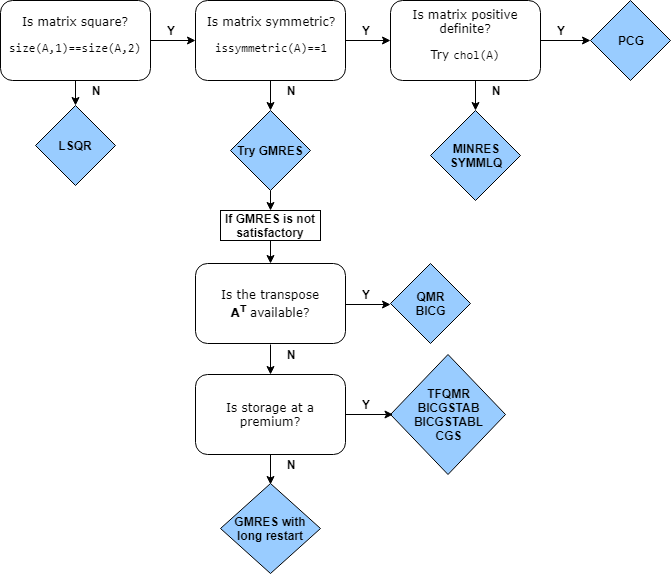

Iterative Methods for Linear Systems
One of the most important and common applications of numerical linear algebra is the
solution of linear systems that can be expressed in the form A*x = b. When
A is a large sparse matrix, you can solve the linear system using
iterative methods, which enable you to trade off between the run time of the calculation and
the precision of the solution. This topic describes the iterative methods available in
MATLAB® to solve the equation A*x = b.
Direct vs. Iterative Methods
There are two types of methods for solving linear equations A*x =
b:
Direct methods are variants of Gaussian elimination. These methods use the individual matrix elements directly, through matrix operations such as LU, QR, or Cholesky factorization. You can use direct methods to solve linear equations with a high level of precision, but these methods can be slow when operating on large sparse matrices. The speed of solving a linear system with a direct method strongly depends on the density and fill pattern of the coefficient matrix.
For example, this code solves a small linear system.
A = magic(5); b = sum(A,2); x = A\b; norm(A*x-b)
ans = 1.4211e-14
MATLAB implements direct methods through the matrix division operators
/and\, as well as functions such asdecomposition,lsqminnorm, andlinsolve.Iterative methods produce an approximate solution to the linear system after a finite number of steps. These methods are useful for large systems of equations where it is reasonable to trade off precision for a shorter run time. Iterative methods use the coefficient matrix only indirectly, through a matrix-vector product or an abstract linear operator. Iterative methods can be used with any matrix, but they are typically applied to large sparse matrices for which direct solves are slow. The speed of solving a linear system with an indirect method does not depend as strongly on the fill pattern of the coefficient matrix as a direct method. However, using an iterative method typically requires tuning parameters for each specific problem.
For example, this code solves a large sparse linear system that has a symmetric positive definite coefficient matrix.
A = delsq(numgrid('L',400)); b = ones(size(A,1),1); x = pcg(A,b,[],1000); norm(b-A*x)pcg converged at iteration 796 to a solution with relative residual 9.9e-07. ans = 3.4285e-04
MATLAB implements a variety of iterative methods that have different strengths and weaknesses depending on the properties of the coefficient matrix
A.
Direct methods are usually faster and more generally applicable than indirect methods if
there is enough storage available to carry them out. Generally, you should attempt to use
x = A\b first. If the direct solve is too slow, then you can try using
iterative methods.
Generic Iterative Algorithm
Most iterative algorithms that solve linear equations follow a similar process:
Start with an initial guess for the solution vector
x0. (This is usually a vector of zeros unless you specify a better guess.)Compute the residual norm
res = norm(b-A*x0).Compare the residual against the specified tolerance. If
res <= tol, end the computation and return the computed answer forx0.Apply
A*x0and update the magnitude and direction of the vectorx0based on the value of the residual and other calculated quantities. This is the step where most computation is done.Repeat Steps 2 through 4 until the value of
x0is good enough to satisfy the tolerance.
Iterative methods differ in how they update the magnitude and direction of
x0 in Step 4, and some have slightly different convergence criteria in
Steps 2 and 3, but this captures the basic process that all iterative solvers follow.
Summary of Iterative Methods
MATLAB has several functions that implement iterative methods for systems of linear equations. These methods are designed to solve Ax = b or minimize the norm ||b – Ax||. Several of these methods have similarities and are based on the same underlying algorithms, but each algorithm has benefits in certain situations [1], [2].
Description | Notes |
|---|---|
|
|
|
|
|
|
|
|
|
|
|
|
|
|
|
|
|
|
|
|
|
|
Choosing an Iterative Solver
This flow chart of iterative solvers in MATLAB gives a rough idea of the situations where each solver is useful. You can
generally use gmres for almost all square, nonsymmetric problems. There
are some cases where the biconjugate gradients algorithms (bicg,
bicgstab, cgs, and so on) are more efficient
than gmres, but their unpredictable convergence behavior often makes
gmres a better initial choice.

Preconditioners
The convergence rate of iterative methods is dependent on the spectrum (eigenvalues) of the coefficient matrix. Therefore, you can improve the convergence and stability of most iterative methods by transforming the linear system to have a more favorable spectrum (clustered eigenvalues or a condition number near 1). This transformation is performed by applying a second matrix, called a preconditioner, to the system. This process transforms the linear system
into an equivalent system
The ideal preconditioner transforms the coefficient matrix A into an identity matrix, since any iterative method will converge in one iteration with such a preconditioner. In practice, finding a good preconditioner requires tradeoffs. The transformation is performed in one of three ways: left preconditioning, right preconditioning, or split preconditioning.
The first case is called left preconditioning since the preconditioner matrix M appears on the left of A:
These iterative solvers use left preconditioning:
In right preconditioning, M appears on the right of A:
These iterative solvers use right preconditioning:
Finally, for symmetric coefficient matrices A, split
preconditioning ensures that the transformed system is still symmetric. The
preconditioner gets split and the factors appear on different sides of
A:
The solver algorithm for split preconditioned systems is based on the above equation,
but in practice there is no need to compute H. The solver algorithm
multiplies and solves with M directly.
These iterative solvers use split preconditioning:
In all cases, the preconditioner M is chosen to accelerate convergence of the iterative method. When the residual error of an iterative solution stagnates or makes little progress between iterations, it often means you need to generate a preconditioner matrix to incorporate into the problem.
The iterative solvers in MATLAB allow you to specify a single preconditioner matrix M, or
two preconditioner matrix factors such that M =
M1M2. This makes it easy to specify a preconditioner in its factorized form,
such as M = LU. Note that in the split preconditioned case, where M =
HHT also holds, there is not a relation between the M1 and
M2 inputs and the H factors.
In some cases, preconditioners occur naturally in the mathematical model of a given problem. In the absence of natural preconditioners, you can use one of the incomplete factorizations in this table to generate a preconditioner matrix. Incomplete factorizations are essentially incomplete direct solves that are quick to calculate.
| Function | Factorization | Description |
|---|---|---|
ilu |
| Incomplete LU factorization for square or rectangular matrices. |
ichol |
| Incomplete Cholesky factorization for symmetric positive definite matrices. |
See Incomplete Factorizations for more information about ilu
and ichol.
Preconditioner Example
Consider the five-point finite difference approximation to Laplace's equation on a
square, two-dimensional domain. The following commands use the preconditioned conjugate
gradient (PCG) method with the preconditioner M = L*L', where
L is the zero-fill incomplete Cholesky factor of
A. For this system, pcg is unable to find a
solution without specifying a preconditioner matrix.
A = delsq(numgrid('S',250));
b = ones(size(A,1),1);
tol = 1e-3;
maxit = 100;
L = ichol(A);
x = pcg(A,b,tol,maxit,L,L');pcg converged at iteration 92 to a solution with relative residual 0.00076.
pcg requires 92 iterations to achieve the specified tolerance.
However, using a different preconditioner can yield better results. For example, using
ichol to construct a modified incomplete Cholesky allows
pcg to meet the specified tolerance after only 39
iterations.
L = ichol(A,struct('type','nofill','michol','on')); x = pcg(A,b,tol,maxit,L,L');
pcg converged at iteration 39 to a solution with relative residual 0.00098.
Equilibration and Reordering
For computationally tough problems, you might need a better preconditioner than the one
generated by ilu or ichol directly. For example,
you might want to generate a better quality preconditioner or minimize the amount of
computation being done. In these cases, you can use equilibration to
make the coefficient matrix more diagonally dominant (which can lead to a better quality
preconditioner) and reordering to minimize the number of nonzeros in
matrix factors (which can reduce memory requirements and may improve the efficiency of
subsequent calculations).
If you use both equilibration and reordering to generate a preconditioner, the process is:
Use
equilibrateon the coefficient matrix.Reorder the equilibrated matrix using a sparse matrix reordering function, such as
dissectorsymrcm.
Here is an example that uses equilibration and reordering to generate a preconditioner for a sparse coefficient matrix.
Create the coefficient matrix
Aand a vector of onesbfor the right-hand side of the linear equation. Calculate an estimation of the condition number forA.load west0479; A = west0479; b = ones(size(A,1),1); condest(A)ans = 1.4244e+12
Use
equilibrateto improve the condition number of the coefficient matrix.[P,R,C] = equilibrate(A); Anew = R*P*A*C; bnew = R*P*b; condest(Anew)
ans = 5.1042e+04
Reorder the equilibrated matrix using
dissect.q = dissect(Anew); Anew = Anew(q,q); bnew = bnew(q);
Generate a preconditioner using an incomplete LU factorization.
[L,U] = ilu(Anew);
Solve the linear system with
gmresusing the preconditioner matrices, a tolerance of1e-10, 50 maximum outer iterations, and 30 inner iterations.tol = 1e-10; maxit = 50; restart = 30; [xnew, flag, relres] = gmres(Anew,bnew,restart,tol,maxit,L,U); x(q) = xnew; x = C*x(:);
Now, compare the
relresrelative residual returned bygmres(which includes the preconditioners) to the relative residual without the preconditionersresnewand the relative residual without equilibrationres. The results show that even though the linear systems are all equivalent, the different methods apply different weights to each element, and this can significantly affect the value of the residual.relres resnew = norm(Anew*xnew - bnew) / norm(bnew) res = norm(A*x - b) / norm(b)
relres = 8.7537e-11 resnew = 3.6805e-08 res = 5.1415e-04
Using Linear Operators Instead of Matrices
The iterative solvers in MATLAB do not require that you provide a numeric matrix for
A. Since the calculations performed by the solvers use the result of
the matrix-vector multiplication A*x or A'*x, you can
instead provide a function that calculates the result of those linear operations. A function
that calculates these quantities is often called a linear
operator.
In addition to using a linear operator instead of a coefficient matrix
A, you can also use a linear operator instead of a matrix for the
preconditioner M. In that case, the function needs to calculate
M\x or M'\x, as indicated on the reference page for
the solver.
Using linear operators enables you to exploit patterns in A or
M to calculate the value of the linear operations more efficiently than
if the solver used the matrix explicitly to carry out the full matrix-vector multiplication.
It also means you do not need the memory to store the coefficient or preconditioner
matrices, since the linear operator typically calculates the result of the matrix-vector
multiplication without forming the matrix at all.
For example, consider the coefficient matrix
A = [2 -1 0 0 0 0;
-1 2 -1 0 0 0;
0 -1 2 -1 0 0;
0 0 -1 2 -1 0;
0 0 0 -1 2 -1;
0 0 0 0 -1 2];When A multiplies a vector, most of the elements in the resulting
vector are zeros. The nonzero elements in the result correspond with the nonzero tridiagonal
elements of A. So, for a given vector x, the linear
operator function simply needs to add together three vectors to calculate the value of
A*x:
function y = linearOperatorA(x) y = -1*[0; x(1:end-1)] ... + 2*x ... + -1*[x(2:end); 0]; end
Most iterative solvers require the linear operator function for A to
return the value of A*x. Likewise, for the preconditioner matrix
M, the function generally must calculate M\x. For
the solvers lsqr, qmr, and
bicg, the linear operator functions must also return the value for
A'*x or M'\x when requested. See the iterative
solver reference pages for examples and descriptions of linear operator functions.
References
[1] Barrett, R., M. Berry, T. F. Chan, et al., Templates for the Solution of Linear Systems: Building Blocks for Iterative Methods, SIAM, Philadelphia, 1994.
[2] Saad, Yousef, Iterative Methods for Sparse Linear Equations. PWS Publishing Company, 1996.